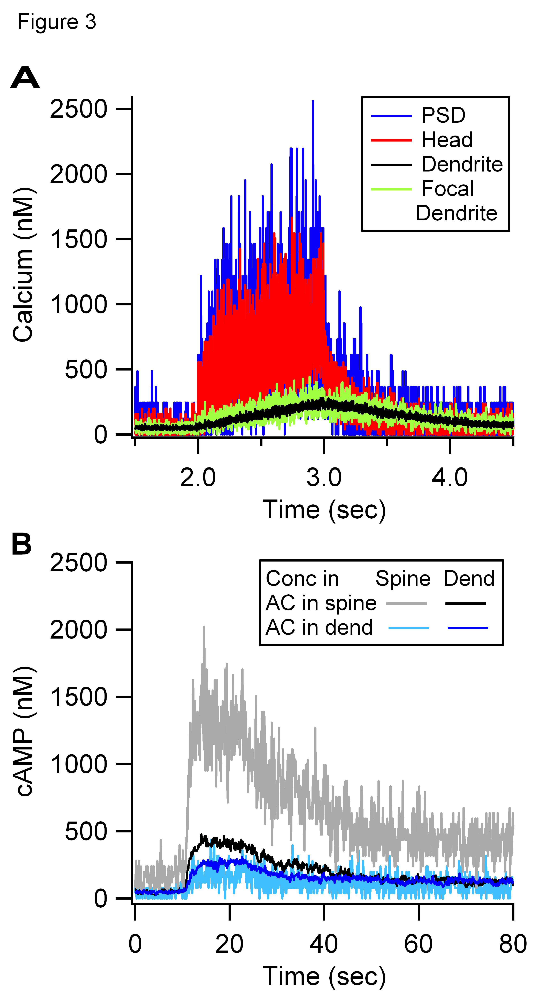
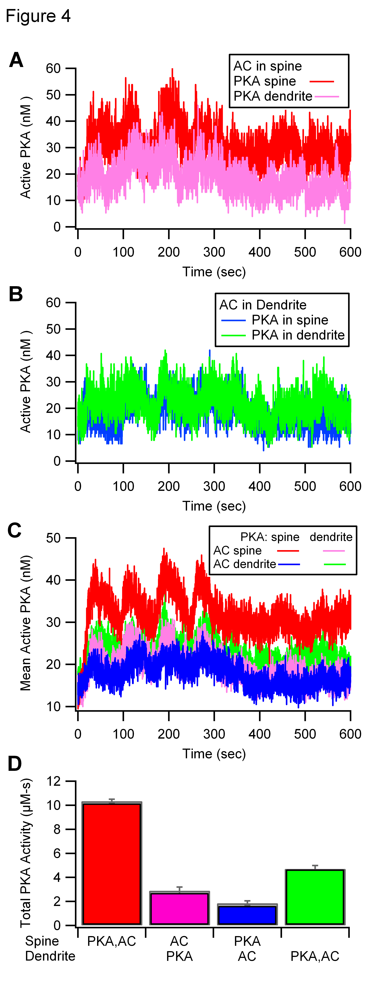

Here are files associated with a modeling paper in Press in PLoS Comp Biol. This computer code was contributed by Avrama BlackwellThis is a multi-compartmental, stochastic version of the Kim et al. 2010 paper. Here there are a few additional reactions, and some of the rate constants have been updated. It addresses the role of molecule anchoring in PKA dependent hippocampal LTP. 1. KimBlackwellPLoSCompBiol_NeuroRDxml.tar contains the xml for default parameters and for the spine neck length variations. 2. StocMeshMorphMol.jar - java program for extracting concentration of particular molecules averaged over different spatial regions 3. StocBatch_ABDE - batch file to run the java program to extract the molecules graphed in the figures describing default simulations (effect of location). 4. stochdiff-2.0.3-mol.jar - version of NeuroRD, which outputs molecule quantity, used for the simulations. The output of this file is processed by StocMeshMorphMol. A single simulation takes several days to run.  Above Figure 3 shows the output from two simulations.  Figure 5 shows different molecules output from these and two additional simulations (ModelA = spine/spine, ModelE = dend/dend, Model B = spine/dend, Model D = dend/spine). Most other figures show traces averaged over multiple random seeds. I hope that these model use the random seed in these figures, but I don't guarantee it. The README file for NeuroRD is also supplied under NeuroRD-README.txt